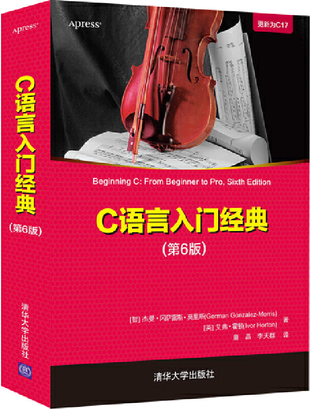

首页 > 书籍下载
《C语言入门经典（第6版）》PDF下载（高清完整版）
|  | 作者：[智利] 杰曼·冈萨雷斯·莫里斯（German Gonzalez-Morris）、[英]艾弗·霍顿（Ivor Horton） |
| 译者：童晶、李天群 | |
| 出版时间：2022年01月01日 | |
| 出版社：清华大学出版社 | |
| 书号ISBN：9787302590262 | |
| 总页数：600 |
这是一本经典的 C 语言入门书籍，目前已经迭代了 6 个版本，语言通俗易懂，讲解脉络清晰，内容全面、详细，非常适合 0 基础、想入门编程的读者。
这里提供的是《C语言入门经典（第6版）》的高清 PDF 下载，内容完整，附带目录标签。
这本书的主要内容可以简单概括为以下几点：
- 全面地介绍 C 这门编程语言；
- 使用变量、循环、判断、数组、字符串、指针、函数、宏、结构体等编写应用程序代码；
- 调试程序的常用方法；
- 掌握文件读写操作，了解多线程编程等。
下面是一位读者对这本书的评价：
内容讲解特别详细，很适合初学者，可操作性很强，例子讲解很清晰，内容也很实用，常用范例很有参考价值。
作为一名老程序员，建议初学者阅读书籍的同时，一定要多动手编写代码，而不是只用眼睛看，可以多书中的每个案例都动手实现一遍，必要时可以多敲几遍。书籍目录
- 第1章 C语言编程 1
- 1.1 C语言 1
- 1.2 标准库 2
- 1.3 学习C语言 2
- 1.4 创建C程序 2
- 1.5 创建个程序 5
- 1.6 编辑个程序 5
- 1.7 处理错误 6
- 1.8 剖析一个简单的程序 7
- 1.9 预处理器 13
- 1.10 用C语言开发程序 14
- 1.11 函数及模块化编程 15
- 1.12 常见错误 18
- 1.13 要点 19
- 1.14 小结 19
- 1.15 习题 19
- 第2章 编程初步 21
- 2.1 计算机的内存 21
- 2.2 什么是变量 23
- 2.3 存储整数的变量 24
- 2.4 变量与内存 35
- 2.5 使用浮点数 39
- 2.6 浮点数变量 40
- 2.7 较复杂的表达式 43
- 2.8 定义命名常量 46
- 2.9 选择正确的类型 51
- 2.10 强制类型转换 54
- 2.11 再谈数值数据类型 57
- 2.12 赋值操作的op=形式 64
- 2.13 数学函数 65
- 2.14 设计一个程序 66
- 2.15 小结 72
- 2.16 练习 73
- 第3章 条件判断 75
- 3.1 判断过程 75
- 3.2 多项选择问题 98
- 3.3 按位运算符 108
- 3.4 设计程序 115
- 3.5 小结 119
- 3.6 练习 119
- 第4章 循环 121
- 4.1 循环概述 121
- 4.2 递增和递减运算符 122
- 4.3 for循环 122
- 4.4 for循环的一般语法 126
- 4.5 再谈递增运算符和递减运算符 126
- 4.6 再论for循环 128
- 4.7 while循环 139
- 4.8 嵌套的循环 142
- 4.9 嵌套循环和goto语句 147
- 4.10 do-while循环 148
- 4.11 continue语句 151
- 4.12 设计程序 151
- 4.13 小结 163
- 4.14 习题 163
- 第5章 数组 165
- 5.1 数组简介 165
- 5.2 寻址运算符 171
- 5.3 数组和地址 173
- 5.4 数组的初始化 174
- 5.5 确定数组的大小 175
- 5.6 多维数组 176
- 5.7 多维数组的初始化 177
- 5.8 常量数组 183
- 5.9 变长数组 185
- 5.10 设计一个程序 187
- 5.11 小结 194
- 5.12 习题 195
- 第6章 字符串和文本的应用 197
- 6.1 什么是字符串 197
- 6.2 存储字符串的变量 198
- 6.3 字符串操作 203
- 6.4 分析和转换字符串 222
- 6.5 设计一个程序 229
- 6.6 小结 235
- 6.7 习题 235
- 第7章 指针 237
- 7.1 指针初探 237
- 7.2 数组和指针 247
- 7.3 多维数组 250
- 7.4 内存的使用 257
- 7.5 使用指针处理字符串 267
- 7.6 设计程序 278
- 7.7 小结 286
- 7.8 习题 286
- 第8章 程序的结构 289
- 8.1 程序的结构概述 289
- 8.2 函数 293
- 8.3 按值传递机制 300
- 8.4 函数原型 301
- 8.5 指针用作参数和返回值 302
- 8.6 小结 311
- 8.7 习题 312
- 第9章 函数再探 313
- 9.1 函数指针 313
- 9.2 函数中的变量 321
- 9.3 调用自己的函数：递归 325
- 9.4 变元个数可变的函数 328
- 9.5 main()函数 332
- 9.6 结束程序 333
- 9.7 提高性能 335
- 9.8 设计程序 336
- 9.9 小结 352
- 9.10 习题 352
- 第10章 基本输入和输出操作 355
- 10.1 输入和输出流 355
- 10.2 标准流 356
- 10.3 键盘输入 356
- 10.4 屏幕输出 373
- 10.5 其他输出函数 381
- 10.6 小结 383
- 10.7 习题 383
- 第11章 结构化数据 385
- 11.1 数据结构：使用struct 385
- 11.2 再探结构成员 396
- 11.3 结构与函数 407
- 11.4 共享内存 422
- 11.5 设计程序 427
- 11.6 小结 440
- 11.7 习题 440
- 第12章 处理文件 441
- 12.1 文件的概念 441
- 12.2 文件访问 442
- 12.3 写入文本文件 447
- 12.4 读取文本文件 448
- 12.5 在文本文件中读写字符串 451
- 12.6 格式化文件的输入输出 455
- 12.7 错误处理 458
- 12.8 再探文本文件操作模式 459
- 12.9 freopen_s()函数 460
- 12.10 二进制文件的输入输出 461
- 12.11 在文件中移动 468
- 12.12 使用临时文件 476
- 12.13 更新二进制文件 478
- 12.14 文件打开模式小结 495
- 12.15 设计程序 495
- 12.16 小结 501
- 12.17 习题 501
- 第13章 预处理器和调试 503
- 13.1 预处理 503
- 13.2 宏 506 变元 509
- 13.3 多行上的预处理器指令 510 指令 511
- 13.4 调试方法 515
- 13.5 日期和时间函数 522
- 13.6 小结 532
- 13.7 习题 532
- 第14章 高级专用主题 533
- 14.1 使用国际字符集 533
- 14.2 用于可移植性的专用整数类型 545
- 14.3 复数类型 546
- 14.4 用线程编程 550
- 14.5 小结 562
- 附录
- 附录A 计算机中的数学知识 563
- 附录B ASCII字符代码定义 571
- 附录C C语言中的保留字 575
- 附录D 输入输出格式说明符 577
- 附录E 标准库头文件 583
书籍下载
一键登录，免费下载完整版 PDF，文件名称：《C语言入门经典（第6版）》.pdf